Operating Documentation
Direction 5193574-800, Rev# 22
LightSpeed 7.X Service Methods
Module Version 1.0, Version Date 4/22/10
Operating Documentation |
| ||||
| THIS PROCEDURE MEASURES POTENTIALLY HAZARDOUS VOLTAGES. USE AND FOLLOW LOCKOUT/TAGOUT PROCEDURES. | ||||
Illustration 1: NGPDU
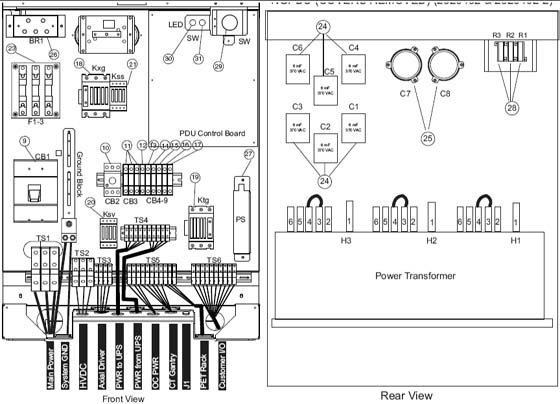
Illustration 2: Flowchart
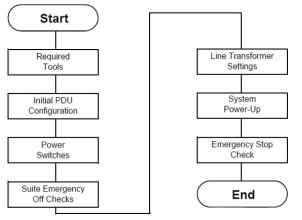
Multimeter with a rating of at least 1000 volts
Multimeter leads with a rating of at least 1000 volts
| ||||
| THIS PROCEDURE MEASURES POTENTIALLY HAZARDOUS VOLTAGES. USE AND FOLLOW LOCKOUT/TAGOUT PROCEDURES. | ||||
Set all PDU, gantry, console, and table circuit breakers to OFF.
Set SW 2 to the Auto-Off position.
When the system is powered, three lamps should be “ON”. (Refer to Illustration 3.)
Illustration 3: NGPDU Control Board
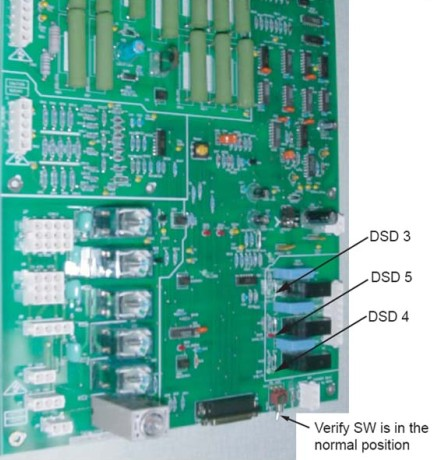
Turn OFF all system power switches at their subsystems.
Gantry power pan breaker
Gantry slip ring ground fault breaker on stationary base right side & all service switches
Table base power
Console power
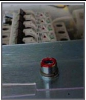
Use this step to check mechanical connections and tighten anything that may have shaken loose during shipment. Verify all hardware and connections in the PDU are securely fastened.
PDU
Gantry
Table
Console
Install, or verify the presence of, all the lexan safety covers for the PDU.
| ||||
| ONLY PERFORM THIS PROCEDURE IF YOU ARE USING PROPER PPE. 480 VOLTS MAYBE PRESENT. VERIFY ALL PERSONNEL HAVE CLEARED THE SYSTEM BEFORE YOU TURN ON WALL POWER. | ||||
Turn wall power ON to the PDU.
| NOTE: | Do not stand in front of the main disconnect to turn on power. |
Press the suite emergency off button and verify it turns off wall power to the PDU.
(Typically, this red palm button is located on the wall close to the console, within the scan suite.)
Verify that all “Emergency Off” buttons are working properly.
Leave power “OFF”.
The PDU is shipped configured for 480VAC.
Complete only if your site uses a voltage other than 480VAC.
If PDU is configured for 480VAC, go to Section 5. Otherwise, proceed to Section 4.2.
| ||||
| MAKE SURE YOU TURNED OFF, TAGGED AND LOCKED THE MAIN WALL POWER BEFORE YOU CHANGE TAPS. FAILURE TO DISCONNECT POWER AT MAIN INPUT MAY RESULT IN ELECTROCUTION. TURN OFF WALL POWER TO CONNECT OR MOVE METER LEADS, OR TO REMOVE OR INSTALL COVERS. WEAR APPROPRIATE ELECTRICAL PPE. | ||||
Monitor the No Load Line to Line Voltage at L1, L2, L3, during the workday. Do not record this data during “brown out” conditions.
After you determine the nearest nominal line, verify the tap connections match (refer to Table 1 and Illustration 4 for tap locations).
Illustration 4: PDU Tap Positions (Rear)
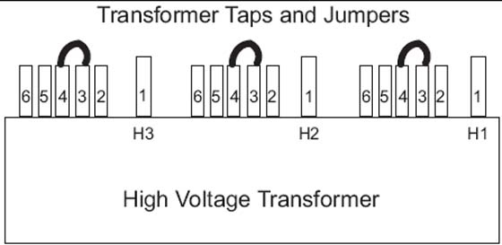
| NOTE: | Taps should be shipped as shown for 480 VAC only. For all others, you must move the taps. The tap check should be completed by the mechanical installer. |
Verify that the No Load Line to Line Voltage never falls outside the corresponding minimum and maximum values listed in Table 1.
Use a 0-750 AC voltmeter of 3/4% accuracy to measure the line-to-line voltages at L1, L2, & L3.
Verify the highest line-to-line voltage does not exceed 1.02 times the lowest voltage.
Example: If the lowest voltage equals 474, the highest voltage should not exceed 474 x 1.02 = 483.5 volts.
| ||||
| THIS PROCEDURE MEASURES POTENTIALLY HAZARDOUS VOLTAGES. USE AND FOLLOW LOCKOUT/TAGOUT PROCEDURES. | ||||
Table 1: Table 4-1 PDU Line Tap Connections
No Load Line to Line Voltages | Tap Connections (All 3 phases must have the same configuration) | |||
| Nominal | Maximum Range (10%) | Phase A Connection | Phase B Connection | Phase C Connection |
| 480V* | 432 to 528* | 3-4* | 3-4* | 3-4* |
| 460V | 414 to 506 | 3-5 | 3-5 | 3-5 |
| 440V | 396 to 484 | 3-6 | 3-6 | 3-6 |
| 420V | 378 to 462 | 2-4 | 2-4 | 2-4 |
| 400V | 360 to 440 | 2-5 | 2-5 | 2-5 |
| 380V | 342 to 418 | 2-6 | 2-6 | 2-6 |
| 240V** | 216 to 264** | 1-4** | 1-4** | 1-4** |
| 220V** | 198 to 242** | 1-5** | 1-5** | 1-5** |
| 200V** | 180 to 220** | 1-6** | 1-6** | 1-6** |
* Factory Default ** 2326492-3 PDU only | ||||
Record system voltages here:
Phase A: _______ Phase B: _______ Phase C: _________
| ||||
| Verify all personnel have cleared the system before you turn on wall power. | ||||
Turn ON the A1 breaker panel.
| NOTE: | Do not stand in front of the main disconnect to turn on power |
Turn ON all system power switches and breakers (PDU, gantry, table, console).
All PDU breakers
Make sure that the on/off button (on the front PDU panel) is ON for console power.
Illustration 5: PDU Power Switch Off
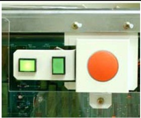
Illustration 6: PDU Power Switch On
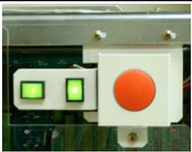
Gantry power pan breaker
Gantry slip ring ground fault breaker on stationary base right side & all service switches
Table base power
Console power (Check internal breaker.)
Turn ON switch S3 in the table (120VAC 24-hour power).
Turn the gantry 120 - 208VAC to ON. (Light should turn on.)
Turn AXIAL DRIVE ENABLE ON. (Light should turn on.)
Turn HV DC ENABLE ON. (Light should turn on.)
Push the Service Switch Panel reset button. (See Illustration 7.)
Illustration 7: Service Switch Panel
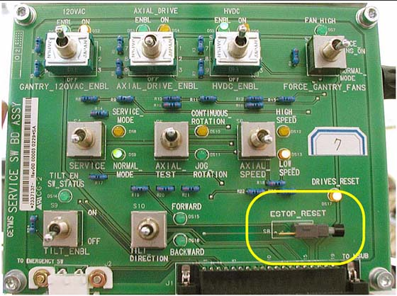
Unplug all top cover fan plugs.
Turn OFF axial drive enable switch AXIAL_DRIVE on the Service Switch Panel.
| NOTE: | For the initial condition, do NOT leave the tube at the 2:30 position. |
Clear the gantry area for rotation.
Press the alignment light push button.
Verify that the gantry did not rotate.
Manually rotate the gantry 360 degrees.
Listen for any interference between the rotating and stationary parts. (Correct any interference problems.)
Listen for any loose parts. (Tighten parts as needed.)
Turn ON all enable switches.
| ||||
| MAKE SURE THERE ARE NO OBSTRUCTIONS AROUND THE GANTRY. PRESSING THE ALIGNMENT LIGHT PUSHBUTTON WILL CAUSE THE GANTRY TO ROTATE. |
Press the alignment light push button.
Verify that the gantry rotates.
Turn off the laser light.
Perform a 2-second X-ray OFF scan.
| NOTE: | During the scan, it may be necessary to enter the scan room to obtain a better listening position. If so, keep a finger on one of the four E-STOP buttons (on the gantry), to quickly stop the gantry, if necessary. |
From the console, click on the [SERVICE DESKTOP] icon.
Select [DIAGNOSTICS].
Select [DIAGNOSTIC DATA COLLECTION]
Set the scan time to 4.00 seconds and rotating X-ray Off.
Select [ACCEPT].
Leave the door open. (This makes it easier to hear any loose or interfering parts.) The gantry should spin for approximately 45 seconds.
Listen for any interference between the rotating and stationary parts. (Correct any interference problems.)
Listen for any loose parts. (Tighten parts as needed.)
After completing the 4-second scan, repeat Step a through Step f, with the following scan times:
2.0 second scans
1.0 second scans
0.7 second scans
0.5 second scans
Confirm all enabled switches are on then install removed covers.
| Required Persons | Preliminary Reqs | Procedure | Finalization |
| 1 (FE or mechanical supplier) | 10 minutes labor on-site |
Medium +blade screw driver
Medium -blade screw driver
Confirm that the plastic safety shield is still in position and secured to the PDU.
If it is not, install the shield using the remover hardware.
Position the front cover so that the bottom is resting on the two guide pins located on the bottom of the PDU chassis.
Raise the cover into place and use the two thumb screws on the top of the front cover to secure it. Screws should be tight, but do not over tighten them.
Place the top cover on the PDU.
Slide the cover toward the front of the PDU until the cover latches.
Using a +blade screw driver, tighten the screws. Do not over tighten them.
Use the gantry push-buttons to advance the cradle about 0.5m (2ft) from the home position.
Press one of the E-STOP buttons on the gantry.
Make sure the TABLE POWER shuts off, and the green LED flashes.
Depress one of the table elevation buttons, to verify the emergency stop disabled table elevation.
Depress one of the cradle drive buttons, to verify the emergency stop disabled the cradle drive.
Press one of the RESET buttons to turn on X-RAY DRIVES POWER. (120 VAC LED stops flashing.)
Press the other E-STOP button on the gantry.
Make sure the Table Power shuts off.
Manually move the cradle to the home position to make sure the cradle clutch released.
Make sure the cradle latches securely in the home position.
Press one of the RESET buttons to turn on X-RAY DRIVES POWER.
Press one of the four table tape switches to make sure the table down motion stops. Repeat with the three remaining table tape switches.
Press the console emergency stop switch; make sure the Table Power shuts off.
Press one of the RESET buttons to turn on X-RAY DRIVES POWER. (See Illustration 8).
Illustration 8: Reset Buttons on Gantry and Service Switch Bank
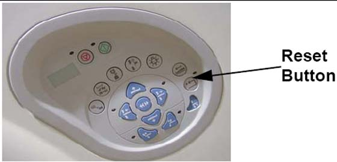
| NOTE: | Emergency Stop buttons are located on the front and rear of the gantry (8 in all), as noted in Illustration 9. They are also located on both sides of the table base (4 in all). Additionally, an emergency stop button is provided on the Operator Console SCIM (see Illustration 10). |
Illustration 9: Gantry Emergency Stop Button Positions
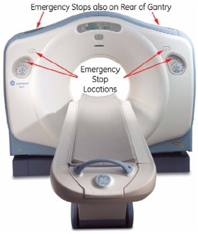
Illustration 10: SCIM Emergency Stop Button
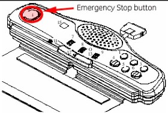